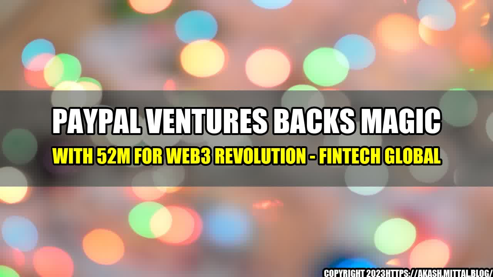

PayPal Ventures backs Magic with 52m for web3 revolution

Once upon a time, there was a new technology called blockchain, which promised to revolutionize the way we do things online. There were skeptics and enthusiasts alike, but no one could deny its potential. Fast forward to today, and blockchain is already making waves in various industries, from finance to gaming.
However, to truly unleash the power of blockchain, we need to take it to the next level: web3. And that's exactly what Magic is doing with the help of PayPal Ventures.
What is Magic?
Magic is a developer platform that enables anyone to build decentralized apps (dapps) without needing to understand the complexities of blockchain technology. In other words, Magic is like a magic wand that turns ordinary developers into blockchain wizards.
With Magic, developers can quickly and easily create dapps that are secure, scalable, and user-friendly. Magic's APIs enable seamless integration of blockchain technology into existing apps and workflows, making it simple for businesses to adopt decentralized solutions.
Why is web3 important?
- Trust: By decentralizing data and protocols, web3 reduces the need for intermediaries and increases trust among peers. This has huge implications for industries like finance, where trust is a cornerstone of the system.
- Ownership: With web3, users own their data and have complete control over how it is used. This is a stark contrast to the current web2 model, where companies own and profit from user data.
- Innovation: Web3 unlocks new possibilities for developers and entrepreneurs, enabling them to create entirely new business models and revenue streams that were previously impossible.
What does the $52m investment mean for Magic and web3?
The investment from PayPal Ventures is a huge vote of confidence for Magic and the web3 ecosystem as a whole. It shows that major players in the financial industry are recognizing the potential of blockchain and are willing to invest heavily in it.
With the funding, Magic plans to expand its team and its product offering, making blockchain development even more accessible to businesses and developers around the world.
Practical tips for getting involved in web3
- Learn the basics: Before diving into web3 development, it's important to have a good understanding of blockchain and its underlying principles. There are plenty of resources available online, including courses, tutorials, and forums.
- Join the community: Web3 is a collaborative effort, and there are many active communities and forums where developers, entrepreneurs, and enthusiasts share ideas and work together on projects. Some popular communities include Ethereum, Polkadot, and Solana.
- Experiment and build: The best way to learn is by doing, so start experimenting with building dapps and see what you can create. There are plenty of tools and platforms available, including Magic, that make it easy to get started.
Conclusion
The web3 revolution is still in its early stages, but the potential for disruption and innovation is immense. With the help of platforms like Magic and the investment of major players like PayPal Ventures, we're inching closer to a future where decentralization and trust are the norm.
- Web3 enables increased trust, ownership, and innovation
- Magic is a platform that makes blockchain development accessible to everyone
- The $52m investment from PayPal Ventures is a major vote of confidence for web3 and blockchain technology
Curated by Team Akash.Mittal.Blog
Share on Twitter Share on LinkedIn